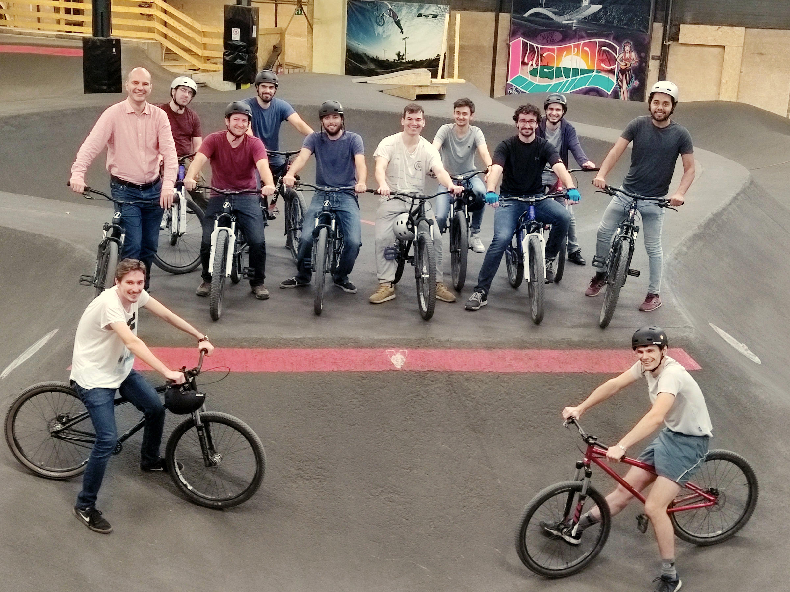

The former group at INSA-Lyon

The group in October 2021 at our "ML + Control workshop": Steeven Janny, Edward Beeching, Theo Jaunet, Quentin Possamai, Pierre Marza, Assem Sadek, Olivier Serris, Guillaume Bono, Aurelien Beneteau, Corentin Kervadec (not shown).
The group in Februar 2020:
Corentin Kervadec,
Steeven Janny,
Edward Beeching,
Fabien Baradel,
Theo Jaunet,
Quentin Possamai,
Quentin Debard (not shown).